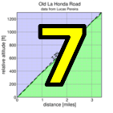

|  |  |
| pl | # | name | team | cat | time | mph | fph | age- adjusted score |
|---|---|---|---|---|---|---|---|---|
| 1 | 803 | Illi Gardner | San Jose Bike Club | Junior | 20:40 | 12.72 | 3356 | 138.19 |
| 2 | 43 | Sindy Cho | Low-Key | Just Make It To The Top | 22:59 | 11.43 | 3018 | 127.26 |
| 3 | 270 | Jill Stone | LGBRC | 4 | 25:14 | 10.41 | 2749 | 121.07 |
| 4 | 401 | Shaena Berlin | MIT-West | 2 | 22:49 | 11.52 | 3040 | 119.38 |
| 5 | 51 | Bonnie Denoyer | LGBRC | 45+ | 24:51 | 10.58 | 2791 | 118.31 |
| 6 | 802 | Mary Anne Cradeur | I don't have a team | Just Make It To The Top (Not Familiar With Categories Yet? | 28:08 | 9.34 | 2465 | 115.15 |
| 7 | 221 | Christina King | Team CVC | 45+ | 26:05 | 10.08 | 2659 | 112.92 |
| 8 | 145 | Maggi Smeal | Team Smeal hattler | 55+ | 28:20 | 9.28 | 2448 | 111.17 |
| 9 | 804 | Crystal Harpstreit | Dolce Vita/Freewheel | 4 | 27:14 | 9.65 | 2547 | 97.95 |
| 10 | 406 | Andrea Ivan | Silicon Valley Triathlon | 60+ | 40:28 | 6.49 | 1714 | 79.78 |
| pl | # | name | team | cat | time | mph | fph | age- adjusted score |
|---|---|---|---|---|---|---|---|---|
| 1 | 228 | Carl Nielson | Sr's & Mr's of No Mercy | 55+ | 18:23 | 14.30 | 3773 | 143.54 |
| 2 | 46 | David Collet | Stanford & Sons | 45+ | 17:57 | 14.64 | 3864 | 134.77 |
| 3 | 90 | Bill Laddish | Team CVC | 45's | 18:07 | 14.51 | 3829 | 133.54 |
| 4 | 311 | Morgan Raines | Bike Trip | 40+ | 18:13 | 14.43 | 3808 | 130.91 |
| 5 | 16 | Joe Fant | LGBRC | 55+ | 20:25 | 12.87 | 3397 | 129.12 |
| 6 | 101 | Paul McKenzie | Sr's & Mr's of No Mercy | 60+ | 21:15 | 12.37 | 3264 | 127.60 |
| 7 | 126 | Stefano Profumo | Squadra SF | 35+ | 18:02 | 14.57 | 3846 | 127.20 |
| 8 | 415 | Christian Paquet | Grumpy Old Men (GOM) | 55+ | 20:48 | 12.63 | 3335 | 127.11 |
| 9 | 39 | Paul Castonguay | Low-Key | 45+ | 19:34 | 13.43 | 3545 | 126.70 |
| 10 | 1 | Daniel Connelly | Low-Key | 3 | 19:39 | 13.37 | 3530 | 126.55 |
| 11 | 420 | Zachary Ulissi | Stanford & Sons | 2 | 18:11 | 14.45 | 3814 | 124.77 |
| 12 | 160 | Jim Williams | San Jose Bike Club | 65+ | 23:04 | 11.39 | 3007 | 122.75 |
| 13 | 214 | Chris Furgiuele | Studio Velo | 35+ | 19:17 | 13.63 | 3597 | 122.05 |
| 14 | 84 | Brian Johnston | LGBRC | 55+ | 21:22 | 12.30 | 3246 | 121.13 |
| 15 | 131 | Doug Reynolds | NightRiders | 60+ | 23:00 | 11.43 | 3016 | 121.09 |
| 16 | 20 | Bruno Acklin | Clagnuts | 55+ | 21:35 | 12.18 | 3214 | 119.03 |
| 17 | 107 | Chris Mickelsen | Pen Velo/Pomodoro | 55+ | 22:08 | 11.87 | 3134 | 118.39 |
| 18 | 309 | Scott Martin | Team Spokesman | 55+ | 22:10 | 11.86 | 3129 | 118.35 |
| 19 | 213 | Rick Ferrell | Team Spokesman | 55+ | 22:20 | 11.77 | 3106 | 116.24 |
| 20 | 71 | Scott Gammon | Legendary | 6 | 19:27 | 13.51 | 3566 | 115.72 |
| 21 | 119 | Jim Perreira | San Jose Bike Club | 45+ | 21:10 | 12.42 | 3277 | 115.42 |
| 22 | 612 | Matt Wocasek | Team Spokesman | 50+ | 21:25 | 12.27 | 3239 | 115.39 |
| 23 | 83 | Steve Johnson | LGBRC | 50+ | 21:36 | 12.17 | 3211 | 114.91 |
| 24 | 98 | Russell McCrary | Sr's & Mr's of No Mercy | 55+ | 23:08 | 11.36 | 2998 | 112.25 |
| 25 | 113 | Bill P | Clagnuts | 6 | 23:18 | 11.28 | 2977 | 111.69 |
| 26 | 304 | George Janour | Spokesmen | 45+ | 21:25 | 12.27 | 3239 | 111.32 |
| 27 | 65 | Andrew Fitzhugh | Stanford Cycling | 50+ | 22:22 | 11.75 | 3101 | 111.22 |
| 28 | 59 | Frank Drobot | Team Djament | 65+ | 25:17 | 10.39 | 2743 | 110.90 |
| 29 | 156 | Alan Weatherall | San Jose Bike Club | 50+ | 22:50 | 11.51 | 3038 | 110.12 |
| 30 | 153 | Nils Tikkanen | Bike Trip | Thankful | 20:26 | 12.86 | 3394 | 109.51 |
| 31 | 125 | Thomas Preisler | LGBRC | 60+ | 24:17 | 10.82 | 2856 | 109.48 |
| 32 | 736 | Roupen Nahabedian | Pen Velo/Pomodoro | 45+ Cat 4 | 22:58 | 11.44 | 3020 | 108.90 |
| 33 | 118 | Ramon Periquet | Team CVC | 50+ | 23:14 | 11.31 | 2985 | 107.64 |
| 34 | 124 | Ryan Powell | Team Joe Karbowski | 35+ | 21:18 | 12.34 | 3256 | 106.86 |
| 35 | 116 | Frank Paysen | Chain Reaction | 55+ | 23:55 | 10.99 | 2900 | 105.94 |
| 36 | 77 | Ed Hattler | Team Smeal hattler | 55+ | 24:29 | 10.73 | 2833 | 104.94 |
| 37 | 230 | Benoit Pelczar | Santa Cruz Endurance | Beat Nic > 40 | 22:19 | 11.78 | 3108 | 104.07 |
| 38 | 87 | Larry Klein | Grumpy Old Men (GOM) | 55+ | 24:37 | 10.68 | 2818 | 102.54 |
| 39 | 302 | Fred Egley | Clagnuts | 50+ | 24:55 | 10.55 | 2784 | 99.11 |
| 40 | 81 | Martin Hyland | Diablo | 55+ | 26:25 | 9.95 | 2626 | 98.75 |
| 41 | 271 | Robert Doudell | LGBRC | 45+ | 25:15 | 10.41 | 2747 | 96.77 |
| 42 | 300 | Tony Amadio | Clagnuts | 30+ | 23:07 | 11.37 | 3000 | 95.39 |
| 43 | 33 | Nicholas Brummell | Atlas | 50+ And Broken | 26:04 | 10.08 | 2661 | 95.27 |
| 44 | 312 | Scott Violet | 40+ | 24:28 | 10.74 | 2835 | 94.76 | |
| 45 | 244 | Bernardo Tapia | 40+ | 24:30 | 10.73 | 2831 | 93.46 | |
| 46 | 306 | Joseph Junio | SOLO | Havefun | 23:53 | 11.00 | 2904 | 91.97 |
| 47 | 247 | Brian Ward | Low-Key | 40+ | 25:45 | 10.21 | 2694 | 88.69 |
| 48 | 242 | Gregory P. Smith | Low-Key | Finisher | 30:02 | 8.75 | 2309 | 73.36 |
| pl | # | name | team | cat | time | mph | fph | age- adjusted score |
|---|---|---|---|---|---|---|---|---|
| 1 | 55 | Emma Dixon | 35+ | 24:28 | 10.74 | 2835 | 112.98 | |
| 56 | Jonathan Dixon | 35+ | ||||||
| 2 | 151 | Ellen Taylor | Tandem Team Taylor | Fair Weather Warriors | 25:11 | 10.44 | 2754 | 108.08 |
| 152 | Stuart Taylor | Tandem Team Taylor | 40+ |
| pl | # | name | team | cat | time | mph | fph | age- adjusted score |
|---|---|---|---|---|---|---|---|---|
| 1 | 6 | Bill Bushnell | Low-Key | Recumbent | 13:31 | 19.44 | 5131 | 94.72 |
| pl | team | age- adjusted score |
riders |
|---|---|---|---|
| 1 | Sr's & Mr's of No Mercy | 383.39 | Paul McKenzie, Carl Nielson, Russell McCrary |
| 2 | Low-Key | 380.50 | Brian Ward, Paul Castonguay, Gregory P. Smith, Bill Bushnell, Sindy Cho, Daniel Connelly |
| 3 | San Jose Bike Club | 376.36 | Illi Gardner, Alan Weatherall, Jim Williams, Jim Perreira |
| 4 | LGBRC | 371.32 | Brian Johnston, Bonnie Denoyer, Thomas Preisler, Robert Doudell, Joe Fant, Jill Stone, Steve Johnson |
| 5 | Team CVC | 354.10 | Christina King, Ramon Periquet, Bill Laddish |
| 6 | Team Spokesman | 349.98 | Rick Ferrell, Scott Martin, Matt Wocasek |
| 7 | Clagnuts | 329.83 | Bruno Acklin, Fred Egley, Bill P, Tony Amadio |
| 8 | 299.01 | Emma Dixon, Jonathan Dixon, Scott Violet | |
| 9 | Stanford & Sons | 259.53 | David Collet, Zachary Ulissi |
| 10 | Bike Trip | 240.42 | Morgan Raines, Nils Tikkanen |
| 11 | Grumpy Old Men (GOM) | 229.65 | Christian Paquet, Larry Klein |
| 12 | Pen Velo/Pomodoro | 227.29 | Chris Mickelsen, Roupen Nahabedian |
| 13 | Team Smeal hattler | 216.11 | Maggi Smeal, Ed Hattler |
| 14 | Tandem Team Taylor | 197.35 | Stuart Taylor, Ellen Taylor |
| 15 | Squadra SF | 127.20 | Stefano Profumo |
| 16 | Studio Velo | 122.05 | Chris Furgiuele |
| 17 | NightRiders | 121.09 | Doug Reynolds |
| 18 | MIT-West | 119.38 | Shaena Berlin |
| 19 | Legendary | 115.72 | Scott Gammon |
| 20 | I don't have a team | 115.15 | Mary Anne Cradeur |
| 21 | Spokesmen | 111.32 | George Janour |
| 22 | Stanford Cycling | 111.22 | Andrew Fitzhugh |
| 23 | Team Djament | 110.90 | Frank Drobot |
| 24 | Team Joe Karbowski | 106.86 | Ryan Powell |
| 25 | Chain Reaction | 105.94 | Frank Paysen |
| 26 | Santa Cruz Endurance | 104.07 | Benoit Pelczar |
| 27 | Diablo | 98.75 | Martin Hyland |
| 28 | Dolce Vita/Freewheel | 97.95 | Crystal Harpstreit |
| 29 | Atlas | 95.27 | Nicholas Brummell |
| 30 | SOLO | 91.97 | Joseph Junio |
| 31 | Silicon Valley Triathlon | 79.78 | Andrea Ivan |